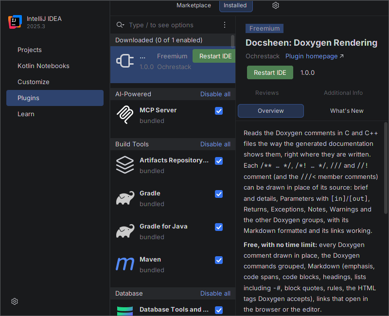
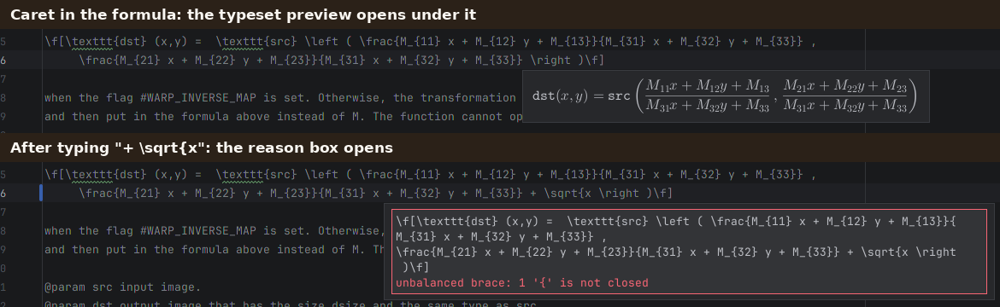

Docsheen quick start
Installing Docsheen, drawing a comment and using its features. Back to the Docsheen product page.
Install (IDE builds 2025.3 and later)
- In the IDE, open Settings | Plugins, search for Docsheen and click Install. Docsheen is not on JetBrains Marketplace yet; until it is live, the search finds nothing.
- The IDE first shows its Third-Party Plugins Notice, naming “Docsheen: Doxygen Rendering (Ochrestack)”: click Accept.
- Click Restart IDE when it asks. It asked in IntelliJ IDEA 2025.3 and 2026.3: the IDE does not load a plugin that carries a Marketplace licence without a restart.
- Open a C or C++ file. Its Doxygen comments are drawn.
From a zip (for example one you were sent before the listing is live): Settings | Plugins, the gear icon, Install Plugin from Disk, choose docsheen-1.0.4.zip without unzipping it, then the same notice and restart.

The “Cannot update plugin” balloon (IntelliJ IDEA 2026.3, zip installs). After a zip install, 2026.3 shows its own notification “Cannot update plugin: Unable to identify where Docsheen: Doxygen Rendering was installed from”, also on the plugin's page. It asks this of every plugin installed from a zip and is harmless; a Marketplace install should not show it, which cannot be checked before the listing exists. IntelliJ IDEA 2025.3 did not show it.
First use
- Open a C or C++ header that has Doxygen comments. What you should see: a block in place of each comment's lines, with Parameters, Returns and the other groups, and Markdown formatted. A comment that shares a line with code (a member comment such as
///<) is drawn just below that line, and is drawn again when the file is closed and opened again. - Nothing changed? The IDE's own Rendered View is showing that comment (Android Studio's does; CLion's does when it is on, as its help page describes, which we have not run), and Docsheen leaves it to it. Press Ctrl+Alt+Q on the comment, or untick Settings | Editor | General | Appearance | Render documentation comments.
- Switch a comment between drawn and source with the gutter icon next to it, Render with Docsheen in the editor's context menu, Find Action (Ctrl+Shift+A, type “Docsheen”), or Ctrl+Alt+Shift+O with the caret in the comment. Render All in File with Docsheen does the whole file.
- To keep comments as source when a file opens, untick Settings | Tools | Docsheen | Render Doxygen comments when a C or C++ file opens. To leave only the member comments as source (a register map with a comment on every line gets a block under each line), untick Also draw member comments there: the gutter icon still draws one, and Render All in File draws them all.
The shortcut, the gutter icon, the context menu entries, Find Action and Render All were each driven in a real IntelliJ IDEA 2025.3 window with this version (33 of 33 steps). CLion has not been run in a window yet.
Edit a drawn comment
Click it (not on a link): its source shows with the caret on the word you clicked (at the comment's first line when the click was on a label the source does not contain, such as the heading “Parameters”). When the caret leaves, it is drawn again with your edit. A web link opens in your browser, a link to a file opens it in the editor. Docsheen never edits or saves a file by itself.
Formulas and the live preview (licence)
- Put the caret inside a formula in a comment's source:
\f$ … \f$,\f[ … \f]or\f{align}{ … \f}(the@fspellings too). A preview appears below the caret and follows each keystroke; Escape closes it. - A formula that cannot be typeset, for example with an unclosed brace or an unknown command, shows its source in a framed box with the reason, such as “unbalanced brace: 1 '{' is not closed”.
- An optional setting typesets
$ … $and$$ … $$too (Settings | Tools | Docsheen; off by default, so$10and$PATHstay text).

Your Doxyfile: macros and images
If your project has a Doxyfile at its root, formulas use its FORMULA_MACROFILE (\newcommand and \renewcommand, with arguments) and images are found through its IMAGE_PATH, after the file's own folder and the project root. Choose another Doxyfile in Settings | Tools | Docsheen; the page shows what was read: the macro file and how many macros, the image directories, or why something could not be read. A Markdown image alone in its paragraph shows its alt text as a caption under the picture. A missing image shows its alt text and the paths tried; remote images are not fetched.
Licence and trial
Comments, Markdown and links are free with no time limit. Formulas, tables, images, the live preview and the macros need a licence, or the 30-day trial: the “Get a licence or trial” link under a comment opens the IDE's own licence dialog with Docsheen selected. Without one, a formula, table or image shows its source, and the first such comment in a file has one quiet line saying what the licence adds; nothing pops up at startup or when the trial ends. The licence is sold through JetBrains Marketplace once the listing is live. The licence dialog is the IDE's own: with Docsheen selected its first option reads “Subscription”, and starting the trial asks you to log in to a JetBrains Account (the free half needs no account). Docsheen's licence is $9 once, perpetual, with every update; nothing renews. The paid half has been tested with a test licence in the window, not with a real purchase or trial.
Known limits
- The editor only: the Quick Documentation popup and documentation shown at call sites stay the IDE's own. Where the IDE's Rendered View shows a comment, Docsheen leaves it alone (see First use, step 2).
- C and C++ source and header files (
.c .h .cpp .hpp .cc .hh .cxx .hxx .inl .ipp .tppand others); not Objective-C, CUDA, Java or Python comments. - Doxygen ALIASES defined in your project are not expanded: an alias such as
\eigenvalues_moduleshows as text, and so does a Doxygen command written after it on the same line, or a command such as\notein the middle of a sentence (a command is recognised at the start of a comment line).\ingroup,\defgroup,\classand\filealone on a line are shown as one grey line each. - LaTeX: Doxygen's formula syntax with the math of standard LaTeX and amssymb, matrices, and the environments equation, align, gather, multline, eqnarray and flalign; not LaTeX packages,
\usepackageor whole documents; equation numbers are not drawn. A command it does not know (\color,\hfill,\SI, a macro defined outside FORMULA_MACROFILE) shows the source and the reason. The formula commands that would load a file or a web address (\includegraphicsand three others) are refused with a reason. - Not drawn: Graphviz
\dotand\dotfile,\msc, PlantUML (their source is shown with a label),\image latex, remote and SVG images.\refand#symbolshow their text and do not jump to code. - A comment of more than 4,000 lines or 200,000 characters stays as source, with the toggle disabled and the reason shown. A formula that would draw wider or taller than 8,000 px shows its reason instead.
- Memory: prepared drawings stay while the file is open, about 50 to 150 KB per drawn comment. Measured on large real headers: 354 comments (a Drake header) added about 50 MB to the IDE's heap, 1,351 comments (a CGAL header) about 90 MB. Drawing happens off the UI thread, about 1 to 2 seconds for such a header.
- Tested in a window on Linux: IntelliJ IDEA 2025.3 (33 of 33 steps) and 2026.3 (29 of 33). Not tested: CLion in a window (Plugin Verifier and automated tests only), Remote Development and Code With Me clients, Rider, the Classic C/C++ engine, and the desktop IDE on Windows and macOS.
How we tested
| What | Result (Docsheen 1.0.4) |
|---|---|
| The 33 OpenCV 4.14.0 headers that contain formulas | 4,699 comments drawn with all their text (91,692 words checked, 0 problems); 10 empty comments are not drawn |
| Their formulas | 1,819 of 1,819 typeset without an error with OpenCV's macro file; 1,724 without it, the other 95 use OpenCV's macros |
Markdown against Doxygen 1.9.8 on imgproc.hpp | headings, list items, code spans, links and emphasis equal on 631 of 633 comments; the other two are lists inside \internal, which Doxygen hides and Docsheen shows |
Speed on imgproc.hpp (5,251 lines, 760 comments) | all drawn in a median 1.4 s, off the UI thread; Docsheen's longest UI-thread block: median 15 ms, worst 33 ms |
| Automated tests | 195 run, 0 failed |
| In a window, Linux | IntelliJ IDEA 2025.3: 33 of 33 steps. IntelliJ IDEA 2026.3: 29 of 33 (the other four type into the editor and click the settings page, which differ in 2026.3; the same four fail on 1.0.1, 1.0.2, 1.0.3 and 1.0.4) |
| JetBrains' Plugin Verifier | Compatible with IntelliJ IDEA 2025.3 and 2026.3 and CLion 2025.3 and 2026.3 |
Speed was measured on the test platform of IntelliJ IDEA 2025.3 (no window), Linux, 4-core Xeon at 2.10 GHz. “Typeset” means drawn without an error: we did not compare each formula's look with Doxygen's own output. The paid half has been tested with a test licence, not with a real purchase or trial. Android Studio Panda 1 (2025.3.1 Canary 5) was checked with release 1.0.0 only. The licence is perpetual and sold through JetBrains Marketplace once the listing is live; the source of the bundled typesetting library (JLaTeXMath, GPL-2.0-or-later with the Classpath Exception) is inside the zip, Docsheen's own source is not.
Privacy
Docsheen reads the text of the C and C++ files open in your editor and, for formulas and images, your project's Doxyfile, the macro file it names and the image files your comments refer to. It keeps everything in memory, writes nothing to your project, and keeps its own settings in the IDE's settings (per-file toggles in the project's workspace file). It makes no network calls, does not fetch remote images, and collects and sends nothing. Licence checks are done by the IDE through JetBrains Marketplace. See also the privacy policy.
Support
Email support@ochrestack.com with your IDE version (Help | About) and, if you can, the comment that went wrong. Bug reports and feature requests are welcome at the same address.